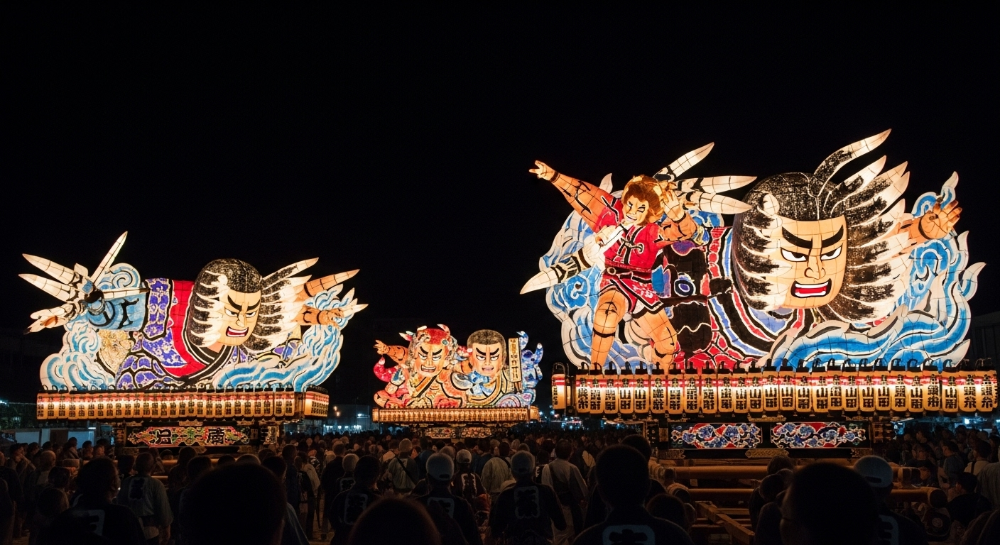

「エネルギッシュな日本の夏を体感したい」「一生モノの思い出を作りたい」方には、東北の夏祭りがおすすめです。中でも「青森ねぶた祭」（8/2～7開催）の迫力と熱気は圧巻です。
【ディープリサーチ・ポイント】
| 日程 | プラン |
|---|---|
| 1日目 | 青森到着と祭りの予習 ・昼：新青森駅 or 青森空港到着。 ・午後：ねぶたの家「ワ・ラッセ」で祭りの歴史を学ぶ。A-FACTORYでお土産探し。 ・夜：青森ねぶた祭を観覧席や沿道から見学。初日から熱気は最高潮！ |
| 2日目 | 自然と祭りの熱狂 ・午前：レンタカーやバスで奥入瀬渓流へ。渓流沿いを散策し、マイナスイオンを浴びる。 ・午後：青森市内に戻り休憩。衣装をレンタルし、ハネト参加の準備！ ・夜：ハネトとして祭りに参加！忘れられない体験を。 |
| 3日目 | 青森の食と文化 ・午前：青森魚菜センターでのっけ丼を作り、朝食を楽しむ。 ・昼：青森県立美術館で「あおもり犬」に会う。 ・午後：新青森駅から帰路へ。 |